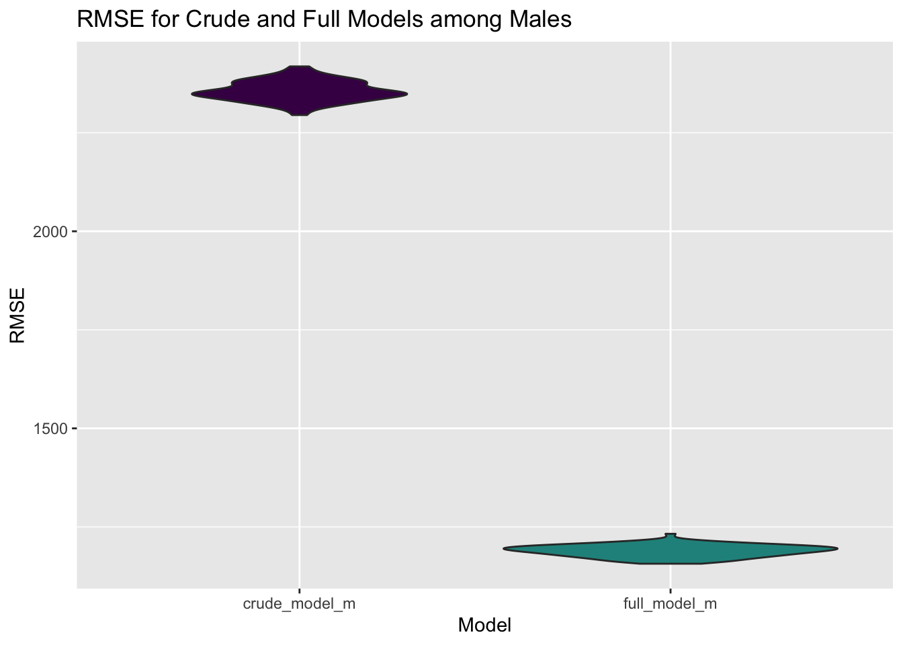

## Data cleaning
years_1 <- c(1900:2012, 2014)
years_2 <- c(2015:2019)
importing_data = function(x){
if(str_detect(x, str_c(years_1, collapse = "|"))) {
read_csv(x, na = c("NULL", "", "0"), col_types = "cicccciiiicc")
}
else if(str_detect(x, str_c(years_2, collapse = "|"))){
read_csv(x, na = c("NULL", "", "0"), col_types = "cccicccccccccccccccccciiiiccc")
}
}
boston_df <-
tibble(list.files("data", full.names = TRUE)) %>%
setNames("file_name") %>%
mutate(data = map(file_name, importing_data)) %>%
unnest(data) %>%
mutate(year = readr::parse_number(file_name),
city = coalesce(city, residence),
display_name = str_replace_all(display_name, "[^a-zA-Z0-9]", " ")) %>%
mutate(country_residence = replace(country_residence, country_residence == "AHO", "Netherland Antilles")) %>%
mutate(country_residence = replace(country_residence, country_residence == "ALB", "Albania")) %>%
mutate(country_residence = replace(country_residence, country_residence == "ALG", "Algeria")) %>%
mutate(country_residence = replace(country_residence, country_residence == "AND", "Andorra")) %>%
mutate(country_residence = replace(country_residence, country_residence == "ARG", "Argentina")) %>%
mutate(country_residence = replace(country_residence, country_residence == "Argenti", "Argentina")) %>%
mutate(country_residence = replace(country_residence, country_residence == "AUS", "Australia")) %>%
mutate(country_residence = replace(country_residence, country_residence == "Austral", "Australia")) %>%
mutate(country_residence = replace(country_residence, country_residence == "AUT", "Austria")) %>%
mutate(country_residence = replace(country_residence, country_residence == "BAH", "Bahamas")) %>%
mutate(country_residence = replace(country_residence, country_residence == "BAR", "Barbados")) %>%
mutate(country_residence = replace(country_residence, country_residence == "Barbado", "Barbados")) %>%
mutate(country_residence = replace(country_residence, country_residence == "BDI", "Burundi")) %>%
mutate(country_residence = replace(country_residence, country_residence == "BLR", "Belarus")) %>%
mutate(country_residence = replace(country_residence, country_residence == "BEL", "Belgium")) %>%
mutate(country_residence = replace(country_residence, country_residence == "BER", "Bermuda")) %>%
mutate(country_residence = replace(country_residence, country_residence == "BRA", "Brazil")) %>%
mutate(country_residence = replace(country_residence, country_residence == "BRN", "Brunei")) %>%
mutate(country_residence = replace(country_residence, country_residence == "BUL", "Bulgaria")) %>%
mutate(country_residence = replace(country_residence, country_residence == "CAN", "Canada")) %>%
mutate(country_residence = replace(country_residence, country_residence == "CAY", "Cayman")) %>%
mutate(country_residence = replace(country_residence, country_residence == "CHI", "Chile")) %>%
mutate(country_residence = replace(country_residence, country_residence == "CHN", "China")) %>%
mutate(country_residence = replace(country_residence, country_residence == "COL", "Colombia")) %>%
mutate(country_residence = replace(country_residence, country_residence == "Colombi", "Colombia")) %>%
mutate(country_residence = replace(country_residence, country_residence == "CRC", "Costa Rica")) %>%
mutate(country_residence = replace(country_residence, country_residence == "Costa R", "Costa Rica")) %>%
mutate(country_residence = replace(country_residence, country_residence == "CRO", "Croatia")) %>%
mutate(country_residence = replace(country_residence, country_residence == "CYP", "Cyprus")) %>%
mutate(country_residence = replace(country_residence, country_residence == "CZE", "Czech Republic")) %>%
mutate(country_residence = replace(country_residence, country_residence == "Czech R", "Czech Republic")) %>%
mutate(country_residence = replace(country_residence, country_residence == "DEN", "Denmark")) %>%
mutate(country_residence = replace(country_residence, country_residence == "DOM", "Dominican Republic")) %>%
mutate(country_residence = replace(country_residence, country_residence == "Dominic", "Dominican Republic")) %>%
mutate(country_residence = replace(country_residence, country_residence == "ECU", "Ecuador")) %>%
mutate(country_residence = replace(country_residence, country_residence == "EGY", "Egypt")) %>%
mutate(country_residence = replace(country_residence, country_residence == "El Salv", "El Salvador")) %>%
mutate(country_residence = replace(country_residence, country_residence == "ESA", "El Salvador")) %>%
mutate(country_residence = replace(country_residence, country_residence == "ESP", "Spain")) %>%
mutate(country_residence = replace(country_residence, country_residence == "EST", "Estonia")) %>%
mutate(country_residence = replace(country_residence, country_residence == "ETH", "Ethiopia")) %>%
mutate(country_residence = replace(country_residence, country_residence == "Ethiopi", "Ethiopia")) %>%
mutate(country_residence = replace(country_residence, country_residence == "Faroe I", "Faroe Islands")) %>%
mutate(country_residence = replace(country_residence, country_residence == "FIN", "Finland")) %>%
mutate(country_residence = replace(country_residence, country_residence == "FLK", "Falkland Islands")) %>%
mutate(country_residence = replace(country_residence, country_residence == "FRA", "France")) %>%
mutate(country_residence = replace(country_residence, country_residence == "GBR", "England")) %>%
mutate(country_residence = replace(country_residence, country_residence == "GER", "Germany")) %>%
mutate(country_residence = replace(country_residence, country_residence == "GRE", "Greece")) %>%
mutate(country_residence = replace(country_residence, country_residence == "GRN", "Greenland")) %>%
mutate(country_residence = replace(country_residence, country_residence == "GUA", "Guatemala")) %>%
mutate(country_residence = replace(country_residence, country_residence == "Guatema", "Guatemala")) %>%
mutate(country_residence = replace(country_residence, country_residence == "HKG", "Hong Kong")) %>%
mutate(country_residence = replace(country_residence, country_residence == "Hong Ko", "Hong Kong")) %>%
mutate(country_residence = replace(country_residence, country_residence == "HON", "Honduras")) %>%
mutate(country_residence = replace(country_residence, country_residence == "Hondura", "Honduras")) %>%
mutate(country_residence = replace(country_residence, country_residence == "HUN", "Hungary")) %>%
mutate(country_residence = replace(country_residence, country_residence == "INA", "Indonesia")) %>%
mutate(country_residence = replace(country_residence, country_residence == "Indones", "Indonesia")) %>%
mutate(country_residence = replace(country_residence, country_residence == "IND", "India")) %>%
mutate(country_residence = replace(country_residence, country_residence == "IRL", "Ireland")) %>%
mutate(country_residence = replace(country_residence, country_residence == "ISL", "Iceland")) %>%
mutate(country_residence = replace(country_residence, country_residence == "ISR", "Israel")) %>%
mutate(country_residence = replace(country_residence, country_residence == "ITA", "Italy")) %>%
mutate(country_residence = replace(country_residence, country_residence == "JAM", "Jamaica")) %>%
mutate(country_residence = replace(country_residence, country_residence == "JPN", "Japan")) %>%
mutate(country_residence = replace(country_residence, country_residence == "JOR", "Jordan")) %>%
mutate(country_residence = replace(country_residence, country_residence == "KEN", "Kenya")) %>%
mutate(country_residence = replace(country_residence, country_residence == "KOR", "Korea")) %>%
mutate(country_residence = replace(country_residence, country_residence == "Korea,", "Korea")) %>%
mutate(country_residence = replace(country_residence, country_residence == "KSA", "Saudi Arabia")) %>%
mutate(country_residence = replace(country_residence, country_residence == "KUW", "Kuwait")) %>%
mutate(country_residence = replace(country_residence, country_residence == "LAT", "Latvia")) %>%
mutate(country_residence = replace(country_residence, country_residence == "LIE", "Liechtenstein")) %>%
mutate(country_residence = replace(country_residence, country_residence == "Liechte", "Liechtenstein")) %>%
mutate(country_residence = replace(country_residence, country_residence == "Lithuan", "Lithuania")) %>%
mutate(country_residence = replace(country_residence, country_residence == "LTU", "Lithuania")) %>%
mutate(country_residence = replace(country_residence, country_residence == "LUX", "Luxembourg")) %>%
mutate(country_residence = replace(country_residence, country_residence == "Luxembo", "Luxembourg")) %>%
mutate(country_residence = replace(country_residence, country_residence == "Macao S", "Macao")) %>%
mutate(country_residence = replace(country_residence, country_residence == "Macedon", "Macedonia")) %>%
mutate(country_residence = replace(country_residence, country_residence == "Malaysi", "Malaysia")) %>%
mutate(country_residence = replace(country_residence, country_residence == "MAR", "Martinique")) %>%
mutate(country_residence = replace(country_residence, country_residence == "Martini", "Martinique")) %>%
mutate(country_residence = replace(country_residence, country_residence == "MAS", "Malaysia")) %>%
mutate(country_residence = replace(country_residence, country_residence == "MEX", "Mexico")) %>%
mutate(country_residence = replace(country_residence, country_residence == "MGL", "Mongolia")) %>%
mutate(country_residence = replace(country_residence, country_residence == "MLT", "Malta")) %>%
mutate(country_residence = replace(country_residence, country_residence == "NCA", "Nicaragua")) %>%
mutate(country_residence = replace(country_residence, country_residence == "NED", "Netherlands")) %>%
mutate(country_residence = replace(country_residence, country_residence == "Netherl", "Netherlands")) %>%
mutate(country_residence = replace(country_residence, country_residence == "New Zea", "New Zealand")) %>%
mutate(country_residence = replace(country_residence, country_residence == "NGR", "Nigeria")) %>%
mutate(country_residence = replace(country_residence, country_residence == "NOR", "Norway")) %>%
mutate(country_residence = replace(country_residence, country_residence == "NZL", "New Zealand")) %>%
mutate(country_residence = replace(country_residence, country_residence == "OMA", "Oman")) %>%
mutate(country_residence = replace(country_residence, country_residence == "PAK", "Pakistan")) %>%
mutate(country_residence = replace(country_residence, country_residence == "Palesti", "Palestine")) %>%
mutate(country_residence = replace(country_residence, country_residence == "PAN", "Panama")) %>%
mutate(country_residence = replace(country_residence, country_residence == "PAR", "Paraguay")) %>%
mutate(country_residence = replace(country_residence, country_residence == "Paragua", "Paraguay")) %>%
mutate(country_residence = replace(country_residence, country_residence == "PER", "Peru")) %>%
mutate(country_residence = replace(country_residence, country_residence == "PHI", "Philippines")) %>%
mutate(country_residence = replace(country_residence, country_residence == "Philipp", "Philippines")) %>%
mutate(country_residence = replace(country_residence, country_residence == "POL", "Poland")) %>%
mutate(country_residence = replace(country_residence, country_residence == "POR", "Portugal")) %>%
mutate(country_residence = replace(country_residence, country_residence == "Portuga", "Portugal")) %>%
mutate(country_residence = replace(country_residence, country_residence == "Puerto", "Puerto Rico")) %>%
mutate(country_residence = replace(country_residence, country_residence == "QAT", "Qatar")) %>%
mutate(country_residence = replace(country_residence, country_residence == "ROU", "Romania")) %>%
mutate(country_residence = replace(country_residence, country_residence == "Saudi A", "Saudi Arabia")) %>%
mutate(country_residence = replace(country_residence, country_residence == "SIN", "Singapore")) %>%
mutate(country_residence = replace(country_residence, country_residence == "Singapo", "Singapore")) %>%
mutate(country_residence = replace(country_residence, country_residence == "SLO", "Slovenia")) %>%
mutate(country_residence = replace(country_residence, country_residence == "Slovaki", "Slovakia")) %>%
mutate(country_residence = replace(country_residence, country_residence == "Sloveni", "Slovenia")) %>%
mutate(country_residence = replace(country_residence, country_residence == "SMR", "San Marino")) %>%
mutate(country_residence = replace(country_residence, country_residence == "South A", "South Africa")) %>%
mutate(country_residence = replace(country_residence, country_residence == "SRB", "Serbia")) %>%
mutate(country_residence = replace(country_residence, country_residence == "Sri Lan", "Sri Lanka")) %>%
mutate(country_residence = replace(country_residence, country_residence == "SUI", "Switzerland")) %>%
mutate(country_residence = replace(country_residence, country_residence == "SVK", "Slovakia")) %>%
mutate(country_residence = replace(country_residence, country_residence == "SWE", "Sweden")) %>%
mutate(country_residence = replace(country_residence, country_residence == "Switzer", "Switzerland")) %>%
mutate(country_residence = replace(country_residence, country_residence == "TCA", "Turks and Caicos")) %>%
mutate(country_residence = replace(country_residence, country_residence == "THA", "Thailand")) %>%
mutate(country_residence = replace(country_residence, country_residence == "Thailan", "Thailand")) %>%
mutate(country_residence = replace(country_residence, country_residence == "TPE", "Taipei")) %>%
mutate(country_residence = replace(country_residence, country_residence == "TRI", "Trinidad")) %>%
mutate(country_residence = replace(country_residence, country_residence == "Trinida", "Trinidad")) %>%
mutate(country_residence = replace(country_residence, country_residence == "TUR", "Turkey")) %>%
mutate(country_residence = replace(country_residence, country_residence == "TWN", "Taiwan")) %>%
mutate(country_residence = replace(country_residence, country_residence == "UAE", "United Arab Emirates")) %>%
mutate(country_residence = replace(country_residence, country_residence == "UGA", "Uganda")) %>%
mutate(country_residence = replace(country_residence, country_residence == "UKR", "Ukraine")) %>%
mutate(country_residence = replace(country_residence, country_residence == "United", "United States")) %>%
mutate(country_residence = replace(country_residence, country_residence == "URU", "Uruguay")) %>%
mutate(country_residence = replace(country_residence, country_residence == "USA", "United States")) %>%
mutate(country_residence = replace(country_residence, country_residence == "VEN", "Venezuela")) %>%
mutate(country_residence = replace(country_residence, country_residence == "Venezue", "Venezuela")) %>%
mutate(country_residence = replace(country_residence, country_residence == "VGB", "Virgin Islands")) %>%
mutate(country_residence = replace(country_residence, country_residence == "VIE", "Vietnam")) %>%
mutate(country_residence = replace(country_residence, country_residence == "ZIM", "Zimbabwe")) %>%
mutate(country_residence = replace(country_residence, country_residence == "RSA", "South Africa")) %>%
mutate(country_residence = replace(country_residence, country_residence == "RUS", "Russia")) %>%
mutate(country_residence = replace(country_residence, country_residence == "Russian", "Russia")) %>%
filter(!is.na(display_name)) %>%
select(-file_name, -residence, -first_name, -last_name) %>%
rename("country_citizenship" = "contry_citizenship" )
## Categorizing countries by continent
boston_df$continent[boston_df$country_residence %in% c(
"Australia",
"New Zealand"
)] <- "Australia"
boston_df$continent[boston_df$country_residence %in% c(
"Algeria",
"Burundi",
"Egypt",
"Ethiopia",
"Kenya",
"Morocco",
"Nigeria,",
"South Africa",
"Uganda",
"Zimbabwe"
)] <- "Africa"
boston_df$continent[boston_df$country_residence %in% c(
"China",
"Hong Kong",
"India",
"Indonesia",
"Israel",
"Japan",
"Jordan",
"Korea",
"Malaysia",
"Mongolia",
"Nepal",
"Oman",
"Pakistan",
"Palestine",
"Philippines",
"Qatar",
"Russia",
"Saudi Arabia",
"Singapore",
"Sri Lanka",
"Taipei",
"Taiwan",
"Thailand",
"Vietnam",
"Brunei",
"Kuwait",
"Macao",
"United Arab Emirates"
)] <- "Asia"
boston_df$continent[boston_df$country_residence %in% c(
"Canada",
"Mexico",
"Puerto Rico",
"United States",
"Bahamas",
"Barbados",
"Belize",
"Bermuda",
"Cayman",
"Dominican Republic",
"Jamaica",
"Martinique",
"Virgin Islands"
)] <- "North America"
boston_df$continent[boston_df$country_residence %in% c(
"Argentina",
"Bolivia",
"Brazil",
"Chile",
"Colombia",
"Costa Rica",
"Ecuador",
"El Salvador",
"Guatemala",
"Honduras",
"Nicaragua",
"Panama",
"Paraguay",
"Peru",
"Uruguay",
"Venezuela",
"Aruba",
"Falkland Island",
"Trinidad"
)] <- "South America"
boston_df$continent[boston_df$country_residence %in% c(
"Albania",
"Andorra",
"Armenia",
"Austria",
"Bahrain",
"Belarus",
"Belgium",
"Bulgaria",
"Croatia",
"Cyprus",
"Czech Republic",
"Denmark",
"England",
"Finland",
"France",
"Germany",
"Greece",
"Greenland",
"Hungary",
"Iceland",
"Ireland",
"Italy",
"Latvia",
"Liechtenstein",
"Lithuania",
"Luxembourg",
"Netherland Antilles",
"Netherlands",
"Norway",
"Poland",
"Portugal",
"Romania",
"Serbia",
"Slovakia",
"Slovenia",
"Spain",
"Sweden",
"Switzerland",
"Turkey",
"Turks and Caicos",
"Ukraine",
"Bosnia",
"Estonia",
"Faroe Islands",
"Macedonia",
"Malta",
"Moldova",
"Monaco",
"San Marino"
)] <- "Europe"
## Creating dataset for regression
regression_df = boston_df %>%
select(seconds, age, continent, gender, year, "5k") %>%
rename(fivek = "5k") %>%
mutate(fivetime = hms(fivek)) %>%
drop_na() %>%
mutate(fivek_seconds = hour(fivetime)*3600 + minute(fivetime)*60 + second(fivetime))
## Reordering the continent variable so that North America is the reference level
regression_df$continent <- factor(regression_df$continent, levels = c("North America", "Africa", "Asia", "Australia", "Europe", "South America"))
## Creating male and female datasets
regression_m_df = regression_df %>%
filter(gender == "M")
regression_f_df = regression_df %>%
filter(gender == "F")crude_model_m = lm(seconds ~ age + continent, data = regression_m_df)
crude_model_m %>%
broom::tidy() %>%
knitr::kable(digits = 3)| term | estimate | std.error | statistic | p.value |
|---|---|---|---|---|
| (Intercept) | 10043.508 | 45.352 | 221.457 | 0.000 |
| age | 76.020 | 0.987 | 77.010 | 0.000 |
| continentAfrica | -1264.576 | 271.947 | -4.650 | 0.000 |
| continentAsia | 530.066 | 64.853 | 8.173 | 0.000 |
| continentAustralia | -254.774 | 127.254 | -2.002 | 0.045 |
| continentEurope | -98.784 | 42.416 | -2.329 | 0.020 |
| continentSouth America | -880.513 | 81.793 | -10.765 | 0.000 |
All predictors in the crude model were significant. For every one year increase in age, marathon time increases by 76.02 seconds. Residing in Africa, Australia, Europe, or South America predicts a decrease in marathon time, while living in Asia predicts an increase, as compared to North America.
full_model_m = lm(seconds ~ age + continent + fivek_seconds, data = regression_m_df)
full_model_m %>%
broom::tidy() %>%
knitr::kable(digits = 3)| term | estimate | std.error | statistic | p.value |
|---|---|---|---|---|
| (Intercept) | -324.155 | 37.119 | -8.733 | 0.000 |
| age | 9.248 | 0.533 | 17.339 | 0.000 |
| continentAfrica | -164.040 | 137.545 | -1.193 | 0.233 |
| continentAsia | 484.629 | 32.793 | 14.778 | 0.000 |
| continentAustralia | 90.174 | 64.354 | 1.401 | 0.161 |
| continentEurope | 44.105 | 21.451 | 2.056 | 0.040 |
| continentSouth America | -21.873 | 41.430 | -0.528 | 0.598 |
| fivek_seconds | 9.127 | 0.026 | 355.204 | 0.000 |
Time for the first 5k of the marathon was a significant predictor when added to the model. Every one second increase in 5k time increases marathon time by 9.13 seconds. Age remained significant, but became a weaker predictor (9.25 second increase in marathon time for every one year increase in age). In the full model, only Asia and Europe remained significant. Residence in Asia and Europe were associated with an increase in marathon time.
crossv_m =
crossv_mc(regression_m_df, 100) %>%
mutate(train = map(train, as_tibble), test = map(test, as_tibble))
crossv_m = crossv_m %>%
mutate(
crude_model_m = map(train, ~lm(seconds ~ age +continent, data = .x)),
full_model_m = map(train, ~lm(seconds ~ age + continent + fivek_seconds, data = .x))) %>%
mutate(
rmse_crude_model_m = map2_dbl(crude_model_m, test, ~rmse(model = .x, data = .y)),
rmse_full_model_m= map2_dbl(full_model_m, test, ~rmse(model = .x, data = .y))) %>%
select(starts_with("rmse")) %>%
pivot_longer(
everything(),
names_to = "model",
values_to = "rmse",
names_prefix = "rmse_") %>%
mutate(model = fct_inorder(model))
ggplot(crossv_m, aes(x = model, y = rmse)) +
geom_violin(trim = TRUE, fill = viridis(n = 1024)) +
labs(x = "Model", y = "RMSE") +
ggtitle("RMSE for Crude and Full Models among Males") 
Comparing the crude and full models via RMSE plot showed the full model had a much lower RMSE. This indicates it had better model fit than the crude model.
crude_model_f = lm(seconds ~ age + continent, data = regression_f_df)
crude_model_f %>%
broom::tidy() %>%
knitr::kable(digits = 3)| term | estimate | std.error | statistic | p.value |
|---|---|---|---|---|
| (Intercept) | 12942.018 | 45.705 | 283.165 | 0.000 |
| age | 43.542 | 1.115 | 39.057 | 0.000 |
| continentAfrica | -2124.174 | 315.727 | -6.728 | 0.000 |
| continentAsia | 444.614 | 105.444 | 4.217 | 0.000 |
| continentAustralia | -563.719 | 154.809 | -3.641 | 0.000 |
| continentEurope | 50.769 | 69.961 | 0.726 | 0.468 |
| continentSouth America | -1134.258 | 121.776 | -9.314 | 0.000 |
All predictors in the crude model were significant, with the exception of the Europe category of the continent variable. For every one year increase in age, marathon time increases by 43.54 seconds. Residing in Africa, Australia, or South America predicts a significant decrease in marathon time, while living in Asia predicts an increase, as compared to North America.
full_model_f = lm(seconds ~ age + continent + fivek_seconds, data = regression_f_df)
full_model_f %>%
broom::tidy() %>%
knitr::kable(digits = 3)| term | estimate | std.error | statistic | p.value |
|---|---|---|---|---|
| (Intercept) | -880.927 | 46.058 | -19.127 | 0.000 |
| age | 8.778 | 0.550 | 15.957 | 0.000 |
| continentAfrica | -220.911 | 153.222 | -1.442 | 0.149 |
| continentAsia | 405.367 | 51.138 | 7.927 | 0.000 |
| continentAustralia | 0.127 | 75.097 | 0.002 | 0.999 |
| continentEurope | 111.013 | 33.930 | 3.272 | 0.001 |
| continentSouth America | -131.609 | 59.131 | -2.226 | 0.026 |
| fivek_seconds | 9.437 | 0.028 | 342.380 | 0.000 |
Time for the first 5k of the marathon was a significant predictor when added to the model. Every one second increase in 5k time increases marathon time by 9.44 seconds. Age remained significant, but became a weaker predictor (8.78 second increase in marathon time for every one year increase in age). In the full model, Asia, Europe, and South America remained significant. Residence in Asia and Europe were associated with an increase in marathon time. South America was associated with a decrease in marathon time.
crossv_f =
crossv_mc(regression_f_df, 100) %>%
mutate(train = map(train, as_tibble), test = map(test, as_tibble))
crossv_f = crossv_f %>%
mutate(
crude_model_f = map(train, ~lm(seconds ~ age +continent, data = .x)),
full_model_f = map(train, ~lm(seconds ~ age + continent + fivek_seconds, data = .x))) %>%
mutate(
rmse_crude_model_f = map2_dbl(crude_model_f, test, ~rmse(model = .x, data = .y)),
rmse_full_model_f = map2_dbl(full_model_f, test, ~rmse(model = .x, data = .y))) %>%
select(starts_with("rmse")) %>%
pivot_longer(
everything(),
names_to = "model",
values_to = "rmse",
names_prefix = "rmse_") %>%
mutate(model = fct_inorder(model))
ggplot(crossv_f, aes(x = model, y = rmse)) +
geom_violin(trim = TRUE, fill = viridis(n = 1024)) +
labs(x = "Model", y = "RMSE") +
ggtitle("RMSE for Crude and Full Models among Females") Comparing the crude and full models via RMSE plot showed the full model had a much lower RMSE. This indicates it had better model fit than the crude model.